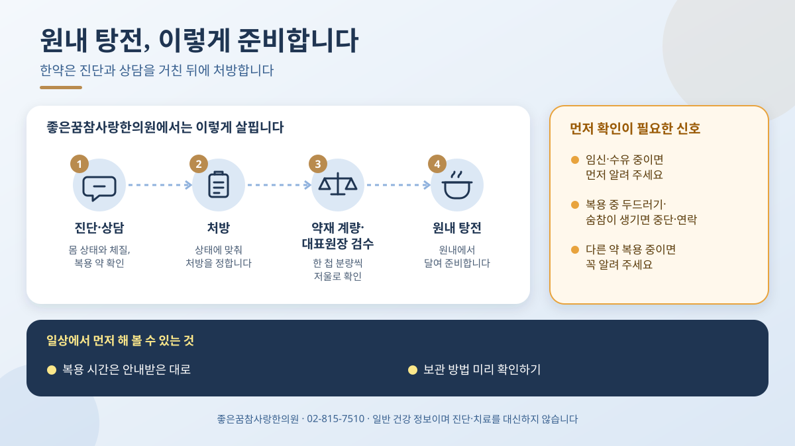
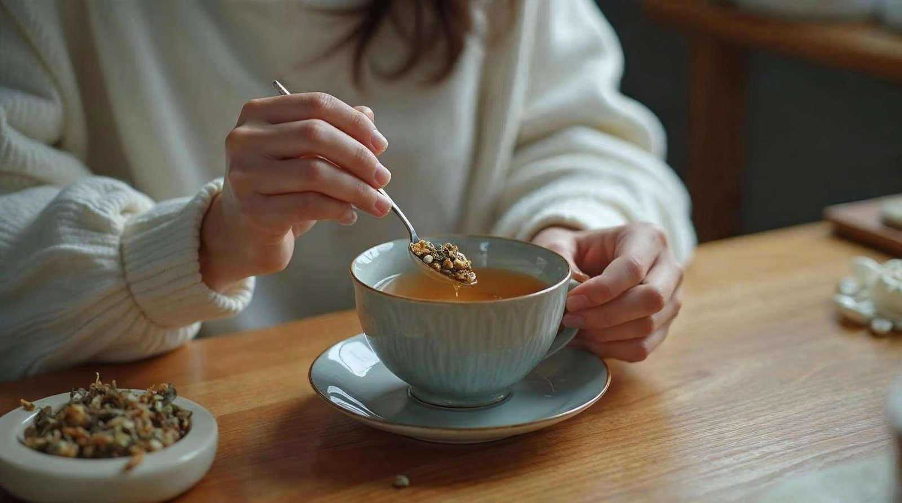
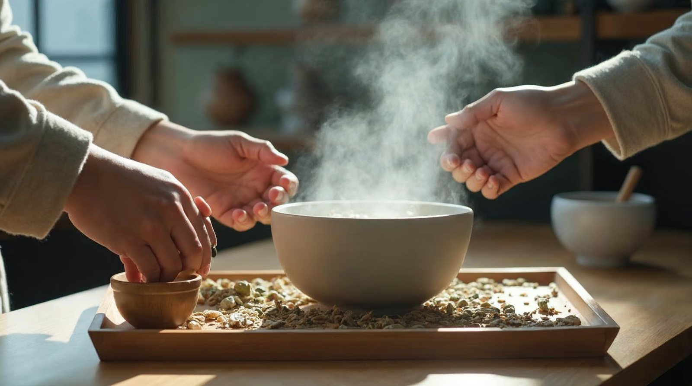
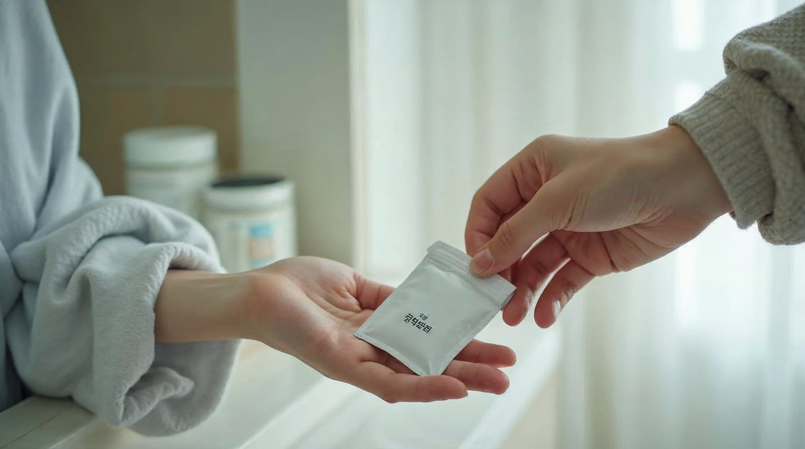
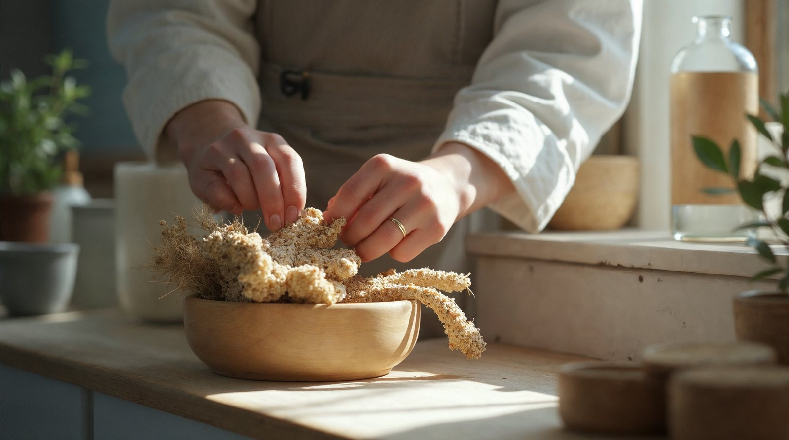
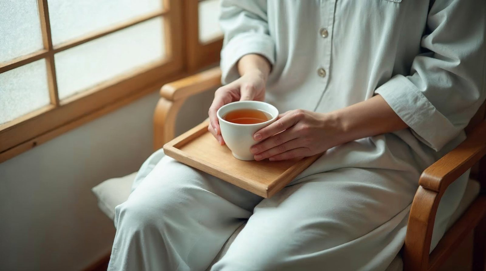

좋은꿈참사랑한의원의 한약은 진단과 상담을 거친 뒤에 처방합니다. 몸 상태와 체질을 먼저 살피고, 약재는 대표원장이 직접 검수한 뒤 원내 탕전으로 준비하며, 복용 중인 약이 있다면 상담 때 꼭 알려 주셔야 합니다.



약을 드실 분의 몸을 봅니다
같은 병명이라도 사람마다 몸이 다르기 때문에 한약도 달라집니다. 주된 증상과 함께 소화, 수면, 체온, 대소변, 복용 중인 약, 간·신장 상태까지 확인해서 처방합니다.
보약을 드시기 전에
"요즘 기운이 없어서 보약 좀 먹어야겠다"고 하시는 분이 많습니다. 하지만 피로는 수면 부족, 과로, 영양, 빈혈이나 갑상선 같은 질환 등 원인이 여러 가지입니다. 바로 채우기 전에, 왜 기운이 떨어졌는지부터 살핍니다. 녹용이나 공진단도 모든 분께 같은 방식으로 권하지 않습니다.
약재 품질을 살피는 일
대표원장은 식품의약품안전처장이 위촉한 한약 관능검사 전문가로 활동하고 있습니다. 이는 대표원장 개인의 활동이며 한의원에서 짓는 한약이 식약처 인증이나 허가를 받았다는 뜻은 아닙니다. 다만 약재의 품질을 살피는 일을 가볍게 여기지 않습니다.
한약 상담, 쉬운 말로 하면
한약은 같은 이름의 처방이라도 사람의 몸 상태와 체질에 따라 구성과 양이 달라질 수 있습니다. 그래서 증상만 듣고 바로 정하지 않고, 상담과 진찰로 지금의 몸을 먼저 살핀 뒤에 짓습니다.
한약을 처음 드시는 분도, 예전에 드셨던 분도 지금 상태를 기준으로 다시 살피며, 드시는 동안의 몸 변화는 다음 진료에서 이어서 여쭙습니다.
한약은 이렇게 준비합니다
원내 탕전 과정은 약재 검수, 수치와 포장, 체질을 고려한 한약 제조의 세 단계로 이어집니다.
- 매주 새 약재가 들어오면 대표원장이 직접 품질과 상태를 확인합니다
- 약재를 수치하고 포장해 달이기 전까지 원장이 직접 챙깁니다
- 환자의 몸 상태와 체질을 살핀 뒤에 한약을 짓습니다
- 한약은 진단과 상담을 거친 뒤에 처방합니다
상담 때 먼저 여쭙는 것
- 지금 불편한 점과 생활 리듬(잠, 소화, 대소변, 몸의 온기)
- 복용 중인 약과 영양제, 건강기능식품
- 임신 가능성과 수유 여부
- 간·신장 관련 진단이나 최근 건강검진 결과
- 예전에 한약을 먹고 불편했던 경험
복용 중인 약이 있다면
혈압약, 당뇨약, 혈액을 묽게 하는 약, 정신건강의학과 약처럼 꾸준히 드시는 약이 있다면 이름과 복용 시간을 꼭 알려 주세요. 약 봉투나 사진을 가져오셔도 됩니다. 원래 드시던 약은 처방한 의사와 상의 없이 줄이거나 끊지 않습니다.
건강기능식품이나 다른 곳에서 받은 한약을 드시고 있다면 그것도 함께 알려 주셔야 겹치는 부분을 확인할 수 있습니다.
드시는 동안 지켜볼 점
- 보관 방법과 복용 시각은 처방할 때 드리는 안내를 따르기
- 속이 불편하거나 피부에 이상이 생기면 복용을 멈추고 한의원에 연락하기
- 감기, 장염 등으로 몸 상태가 바뀌면 복용 전에 문의하기
- 수술이나 검사 일정이 잡히면 미리 알리기
- 여행 일정이 있으면 보관 방법을 미리 상의하기
먼저 다른 진료가 필요한 신호
아래와 같은 경우 복용을 멈추고 내과나 응급실 진료를 먼저 받은 뒤 한의원에도 알려 주세요.
- 눈이나 피부가 노랗게 변하거나 소변 색이 짙어질 때
- 숨이 차거나 얼굴·입술이 부을 때(바로 응급실)
- 심한 복통, 설사, 구토가 이어질 때
공진단 등 이름이 알려진 처방
공진단처럼 이름이 알려진 처방도 진단과 상담을 거쳐 지금의 몸 상태에 맞는지 먼저 살핀 뒤에 처방합니다. 처방의 구성과 비용은 상담 때 안내합니다.
상담 전에 적어 오시면 좋은 것
상담 자리에서는 기억나지 않는 것이 많아 미리 적어 오시면 이야기가 빠지지 않습니다. 가족의 한약을 상담하실 때도 같은 내용을 챙겨 주세요.
- 지금 드시는 약과 영양제 이름(약 봉투 사진도 괜찮습니다)
- 최근 건강검진 결과
- 평소 잠, 소화, 대소변의 모양
- 예전에 한약을 먹었던 시기와 그때 불편했던 점
- 앞으로 잡혀 있는 수술·검사·여행 일정
상도동·노량진에서
좋은꿈참사랑한의원은 2013년 상도동에서 개원했다고 소개하는 한의원으로, 상도역 3번 출구에서 약 200m 거리(서울 동작구 만양로2길 2 신성빌딩 3층·5층 (상도동))에 있습니다. 한약 상담은 진찰과 함께 진행하니 평일(09:30~20:00)이나 토·일·공휴일(09:30~15:00) 진료시간에 맞춰 예약해 주세요.
자주 묻는 질문
양약과 한약을 같이 먹어도 되나요?
많은 경우 가능하지만, 복용 중인 약을 모두 알려 주셔야 상호작용을 확인할 수 있습니다. 보통 시간 간격을 두고 드시도록 안내합니다.
한약은 얼마나 먹어야 하나요?
증상과 처방 목적, 복용 후 상태에 따라 다릅니다. 복용 중간에 몸의 변화를 확인하고 조절합니다.
한약을 먹으면 간이 나빠지나요?
간 질환이 있거나 걱정되시면 미리 알려 주세요. 처방 시 간·신장 상태를 고려하며, 복용 중 이상이 있으면 바로 중단하고 연락하시면 됩니다.
한약은 바로 지어 주나요?
아니요. 진단과 상담을 거친 뒤에 몸 상태와 체질을 살펴 처방합니다.
약재는 어떻게 관리하나요?
매주 새 약재가 들어오면 대표원장이 직접 품질과 상태를 확인하고, 수치와 포장부터 달이기 전까지 원장이 직접 챙깁니다.
혈압약을 먹고 있는데 한약을 같이 먹어도 되나요?
복용 중인 약 이름과 시간을 알려 주시면 상담 때 함께 살핍니다. 혈압약은 처방한 의사와 상의 없이 줄이거나 끊지 않습니다.
감기에 걸렸는데 먹던 한약을 계속 먹어도 되나요?
열이 나거나 속이 불편하면 복용 전에 한의원에 먼저 문의해 주세요. 몸 상태에 따라 복용을 잠시 미루도록 안내할 수 있습니다.
한약 맛이 써서 먹기 힘들면 어떻게 하나요?
복용 시각과 온도, 물을 마시는 방법처럼 생활 속 요령을 함께 정리합니다. 먹기 힘든 점은 숨기지 말고 다음 상담 때 알려 주세요.
여행 갈 때 한약은 어떻게 챙기나요?
여행 기간과 이동 방법을 미리 알려 주시면 보관과 복용 방법을 상의합니다. 처방할 때 드린 보관 안내도 함께 확인하세요.
임신 중이거나 수유 중이면 어떻게 하나요?
반드시 상담 전에 알려 주세요. 약재마다 안전성을 따로 검토해야 하므로, 임신과 수유 여부에 따라 처방 여부와 방법을 신중하게 정합니다.
공진단도 상담 후에 처방하나요?
네. 공진단처럼 이름이 알려진 처방도 진단과 상담을 거쳐 지금의 몸 상태에 맞는지 먼저 살핀 뒤에 처방합니다.
한약을 먹다가 불편하면 어떻게 하나요?
복용을 멈추고 한의원에 연락해 주세요. 피부나 눈이 노랗게 변하거나 숨이 차면 바로 내과나 응급실 진료를 받으세요.
감수: 좋은꿈참사랑한의원 대표원장 이종호 · 마지막 확인 2026-11-26 · 일반적인 건강 정보이며 진단·치료를 대신하지 않습니다.
한약·공진단 글 모아 보기 (20편)

수술을 받고 퇴원한 뒤 체력이 좀처럼 돌아오지 않을 때 한의원에서는 무엇을 살피나요?
수술 뒤에는 상처가 아문 뒤에도 기운·입맛·잠·대변이 한동안 흔들리기 쉽습니다. 수술한 병원의 회복 지침을 먼저 따르고, 그 위에서 담당 의사와 상의한 범위 안에서 생활 리듬과 회복기 몸 상태를 함께 살핍니다.
수정 2026-11-26

한약을 먹으면 살이 찐다는 말은 사실인가요, 체중이 걱정될 때는 무엇을 확인하나요?
한약을 먹으면 살이 찐다는 걱정은 진료실에서 자주 듣는 이야기입니다. 한약 자체보다 입맛과 식사량, 잠과 활동의 변화가 체중과 어떻게 엮이는지, 먹는 동안 무엇을 기록하고 알리면 좋은지 정리했습니다.
수정 2026-11-26

더위를 유난히 못 견디고 조금만 움직여도 땀이 흐르는 몸은 어떻게 살피나요?
남들은 괜찮다는 온도에서 혼자 덥고, 계단 몇 칸에도 등이 젖는 몸이 있습니다. 갑상선·혈당·약처럼 먼저 확인할 것과, 체질과 생활 리듬에서 함께 살필 것을 나눠 정리했습니다.
수정 2026-11-26

아이에게 한약은 몇 살부터 먹일 수 있고, 먹이기 전에는 무엇을 확인하나요?
아이 한약은 나이 숫자 하나로 정하기보다 아이의 몸무게, 먹는 양, 잠과 대변, 지금 먹는 약을 먼저 확인한 뒤 신중하게 정합니다. 몇 살부터 상담하는지, 상담 전에 무엇을 준비하면 좋은지 정리했습니다.
수정 2026-11-26

원내에서 달인 한약을 받는 날 어떻게 보관하면 좋을까요?
원내 탕전 한약을 받는 날은 집까지 오래 들고 다니지 않도록 일정을 잡고, 집에 오면 안내받은 방법대로 보관하며, 포장이 부풀거나 냄새가 이상하면 드시지 말고 연락해 주시면 됩니다.
수정 2026-11-25

상도역 근처 한의원에서 한약 상담을 받기 전에 챙겨 가면 좋은 것은 무엇인가요?
한약 상담 전에는 복용 중인 약의 봉투나 처방전 사진, 영양제 이름, 최근 건강검진 결과지, 최근 1~2주의 식사·잠·대변 메모, 생리 주기 기록을 챙겨 오세요. 몸 상태를 더 정확히 이해하고 처방 여부를 정하는 데 도움이 됩니다.
수정 2026-11-25

임신을 준비하며 부부가 함께 한약 상담을 받을 때는 무엇을 준비하면 되나요?
부부가 함께 한약 상담을 받을 때는 두 사람의 복용 약과 영양제, 산부인과·비뇨의학과 검사 결과, 최근 3개월 월경 기록을 준비해 오시면 이야기가 수월하며, 한약은 진찰과 상담을 거친 뒤 처방 여부를 정합니다.
수정 2026-11-25

야근이 잦아 한약 먹는 시간을 자꾸 놓칠 때는 어떻게 하나요?
한약 복용 시간을 자주 놓친다면 하루 일정에 맞춘 복용 시각을 다시 정하는 것이 먼저이며, 놓쳤을 때는 두 번 분량을 한꺼번에 드시지 말고 처방받을 때 안내받은 방법을 따르시면 됩니다.
수정 2026-11-25
한약을 먹는 중인데 연말 회식이 줄줄이 잡혔다면 술은 어떻게 해야 하나요?
한약을 드시는 동안에는 술을 줄이거나 피하도록 권하는 경우가 많고, 처방 내용과 몸 상태에 따라 달라집니다. 회식 일정이 잡히면 미리 알려 주시면 복용 시간과 방법을 함께 정할 수 있습니다.
수정 2026-11-25

한약 맛이 써서 먹기 힘들 때는 어떻게 하면 좋을까요?
한약 맛이 써서 먹기 힘들다면 무리하게 참기보다 한의원에 먼저 말씀해 주시는 것이 좋으며, 먹는 온도와 시간, 함께 먹어도 되는 것, 다른 형태가 가능한지를 처방에 맞춰 함께 정합니다.
수정 2026-11-25

환(丸)과 탕약은 무엇이 다르고 어떻게 고르나요?
탕약은 약재를 달여 마시는 형태이고 환은 약재를 가루 내어 둥글게 빚은 형태입니다. 어느 한쪽이 늘 맞는다고 단정하기보다 복용 편의, 처방 목적, 몸 상태에 따라 진찰 후 정합니다.
수정 2026-11-26

혈압약이나 당뇨약을 먹고 있는데 한약을 함께 먹어도 되는지 어떻게 확인하나요?
혈압약이나 당뇨약을 드시는 분은 한약 상담 때 약 이름과 용량, 복용 시간, 최근 수치를 알려 주시면 이를 고려해 처방과 복용 간격을 정하며, 양약은 처방한 의사와 상의 없이 끊거나 줄이지 않습니다.
수정 2026-11-25

한약 파우치는 어떻게 보관하고, 여행 갈 때는 어떻게 챙기나요?
한약 파우치는 받을 때 안내받은 보관법과 복용 기간을 지키는 것이 가장 중요하며, 여행 때는 보냉 가방으로 온도를 관리하고 파우치가 부풀거나 냄새가 이상하면 먹지 말고 한의원에 문의합니다.
수정 2026-11-25

한약을 먹는 중에 감기에 걸리면 계속 먹어도 되나요?
한약을 먹는 중에 감기나 배탈이 생기면 계속 먹을지 잠시 멈출지 한의원에 먼저 문의하세요. 새로 드시는 감기약은 이름을 알려 주시면 복용 간격을 함께 정해 드립니다.
수정 2026-11-25

원내 탕전은 무엇이고 한약은 어떤 과정으로 만들어지나요?
원내 탕전은 한약을 한의원 안에서 달이는 방식입니다. 좋은꿈참사랑한의원은 진찰 뒤 처방이 정해지면 약재를 한 첩 분량씩 저울에 달아 확인하고 대표원장이 검수한 뒤 달이며, 복용법과 지켜볼 점을 함께 안내합니다.
수정 2026-11-26
한약을 먹는 동안 어떤 변화를 기록하고 언제 연락해야 하나요?
한약을 드시는 동안 잠, 소화, 대변, 컨디션의 변화와 불편한 점을 간단히 기록해 재진 때 이야기해 주세요. 숨이 차거나 얼굴·입술이 붓는 심한 반응이 있으면 바로 복용을 멈추고 가까운 응급실로 가야 합니다.
수정 2026-11-26

한약은 왜 진단을 먼저 하고 처방하나요?
한약은 증상 이름만으로 정하지 않고 맥진·문진·설진·복진으로 살피며, 이미 받은 검사 결과와 체질적 경향도 참고해 처방 여부를 정합니다. 복용 뒤에도 변화를 살펴 필요하면 처방을 조정합니다.
수정 2026-11-26
한약 상담을 받을 때 무엇을 알려 주면 좋을까요?
한약 상담 때는 불편한 증상과 시작 시기, 잠·식사·소화·대소변, 복용 중인 약과 영양제, 임신·수유 여부, 알레르기와 앓는 질환, 이전 한약을 먹었을 때의 반응을 알려 주시면 처방을 정하는 데 도움이 됩니다.
수정 2026-11-25

환 형태의 한약(공진단)을 상담받기 전에 무엇을 알려야 하나요?
공진단처럼 환(丸) 형태로 만드는 한약을 상담받을 때는 복용 중인 약과 영양제, 알레르기, 임신·수유 여부, 소화 상태와 건강검진 소견을 미리 알려 주세요. 필요한지는 체질과 지금 몸 상태를 먼저 살핀 뒤 함께 정합니다.
수정 2026-11-26

녹용을 한약 재료로 상담받을 때 무엇을 확인하나요?
녹용은 사슴의 어린 뿔을 말하는 한약 재료입니다. 상담 전에는 복용 중인 약과 알레르기, 임신·수유 여부, 열감과 소화 상태를 알려 주세요. 녹용이 필요한지는 체질과 지금 몸 상태를 먼저 살핀 뒤 함께 정합니다.
수정 2026-11-26